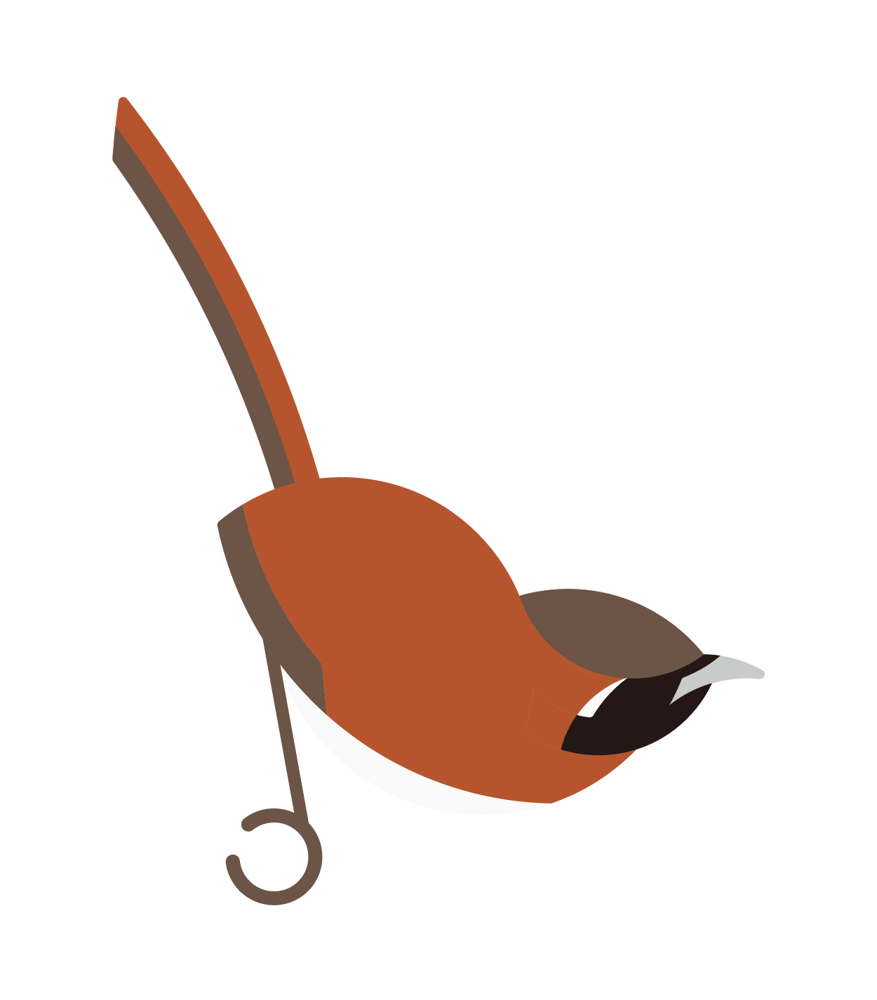
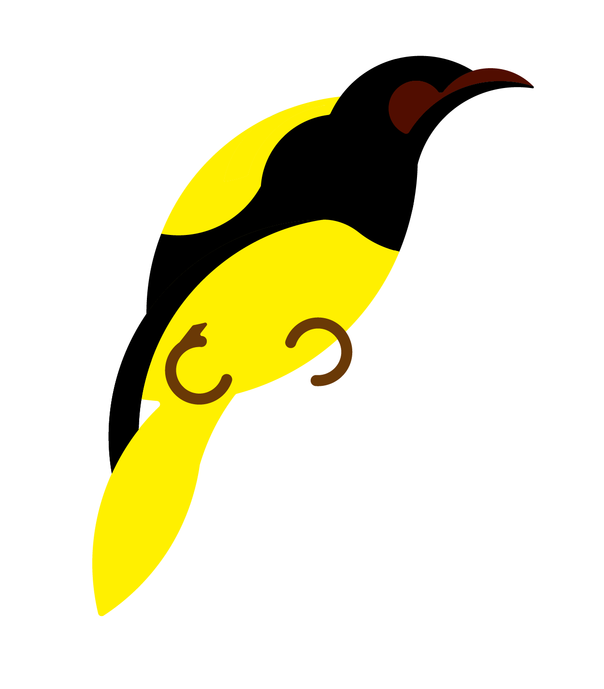
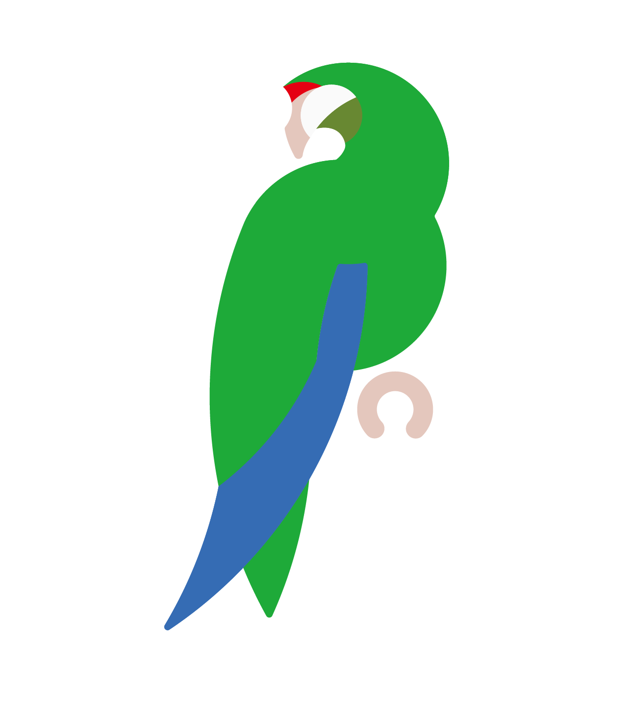
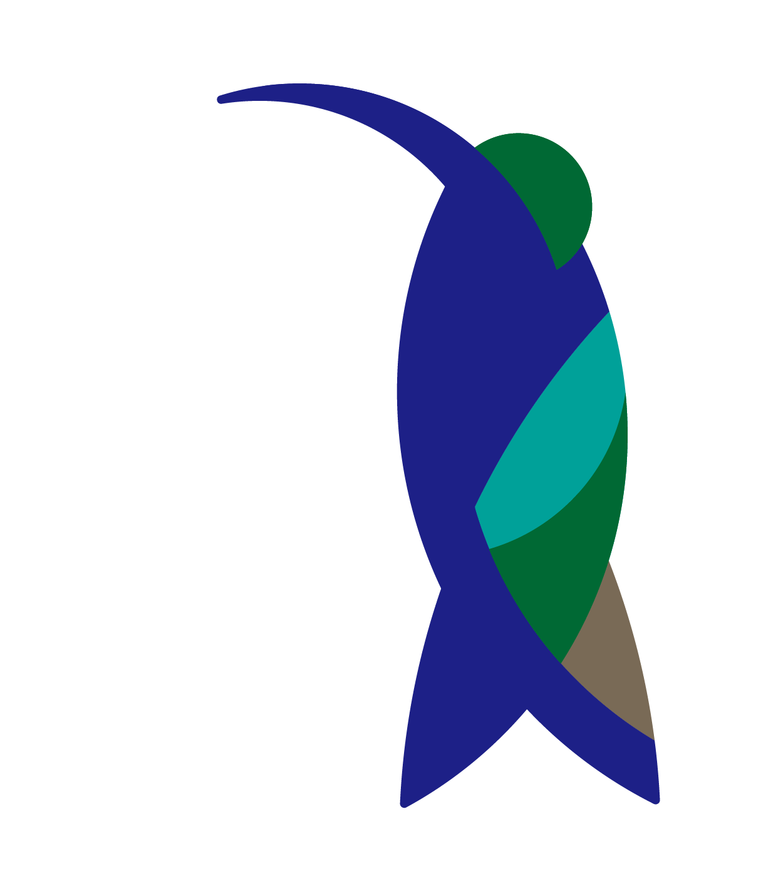

1
Araripe manakin
 |
|
| scientific name | Antilophia bokermanni |
| division | Pipridae |
| habitat | evergreen |
| recorder | Jeremy Minns |
2
Hoary-throated spinetail
|  | |
| scientific name | Synallaxis kollari |
| division | Furnariidae |
| habitat | lowland, Subtropical forest |
| recorder | Jeremy Minns |
3
Niceforo's wren
 |
|
| scientific name | Thryophilus nicefori |
| division | Troglodytidae |
| habitat | tropical high-altitude shrubland |
| recorder | Bernabe Lopez-Lanus |
4
Regent honeyeater
|  | |
| scientific name | Anthochaera phrygia |
| division | Meliphagidae |
| habitat | Austrailan forest |
| recorder | Vicki Powys |
5
Palila
 |
|
| scientific name | Loxioides bailleui |
| division | Carduelinae |
| habitat | upper slopes of Mauna Kea on the island of Hawai ʻi |
| recorder | Tim Burr |
6
Puerto Rican amazon
|  | |
| scientific name | Amazona vittata |
| division | Psittacidae |
| habitat | humid forest |
| recorder | J. Gonzalez y F. Collazo |
7
Sapphire-bellied hummingbird
|  | |
| scientific name | Lepidopyga lilliae |
| division | Trochilidae |
| habitat | subtropical or tropical mangrove forest and subtropical or tropical dry shrubland |
| recorder | Walberto Naranjo |
8
Bali myna
 |
|
| scientific name | Leucopsar rothschildi |
| division | Sturnidae |
| habitat | tree tops |
| recorder | Joe Angseesing |
9
Waved albatross
 |
|
| scientific name | Phoebastria irrorata |
| division | Diomedeidae |
| habitat | tropical coast |
| recorder | Niels Krabbe |
10
blue-banded kingfisher
 |
|
| scientific name | Alcedo euryzona |
| division | Alcedinidae |
| habitat | subtropical or tropical moist lowland forest, subtropical or tropical mangrove forest, and rivers |
| recorder | Simon Mitchell |
11
Seychelles Paradise-flycatcher
 |
|
| scientific name | Terpsiphone corvina |
| division | Monarchidae |
| habitat | Calophyllum forest |
| recorder | Mike Edgecombe |
12
Siberian crane
 |
|
| scientific name | Leucogeranus leucogeranus |
| division | Gruidae |
| habitat | marsh |
| recorder | Sunny |